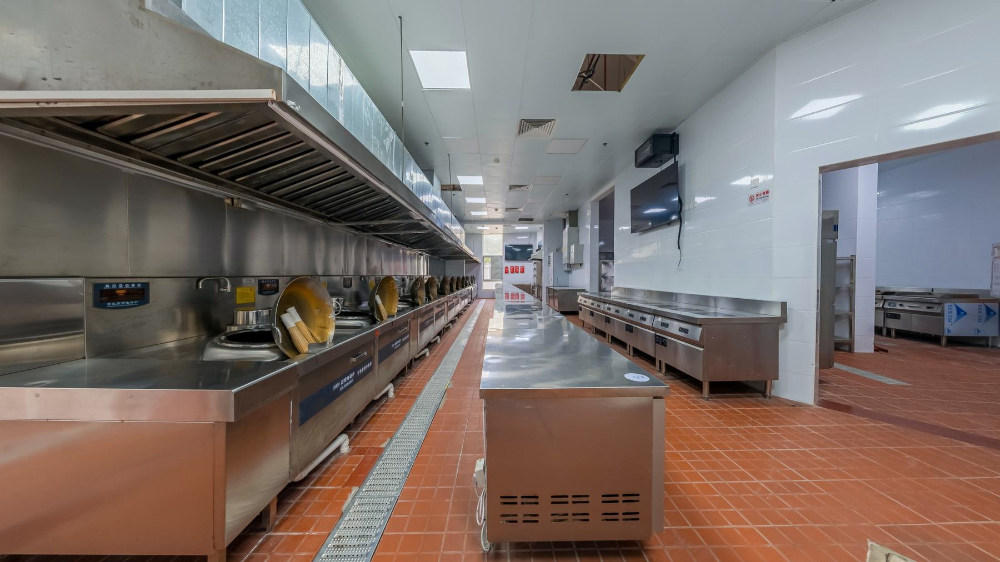

Cozinha Industrial · Jundiaí/SP
De 7 acidentes por ano pra 0.
ProblemaRefeitório que serve 1.200 refeições por dia registrava 7 acidentes por escorregamento em 12 meses.
SoluçãoPiso antiderrapante multicamada nas áreas de cocção e lavagem.
14 meses
seguintes sem nenhum acidente novo